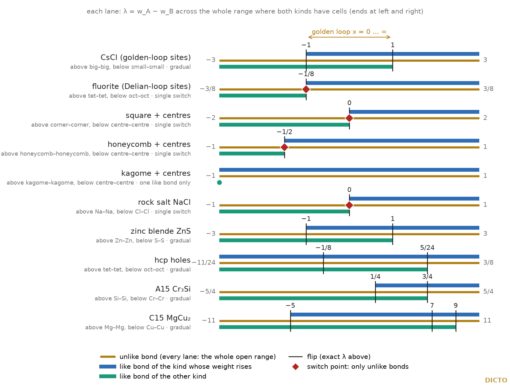
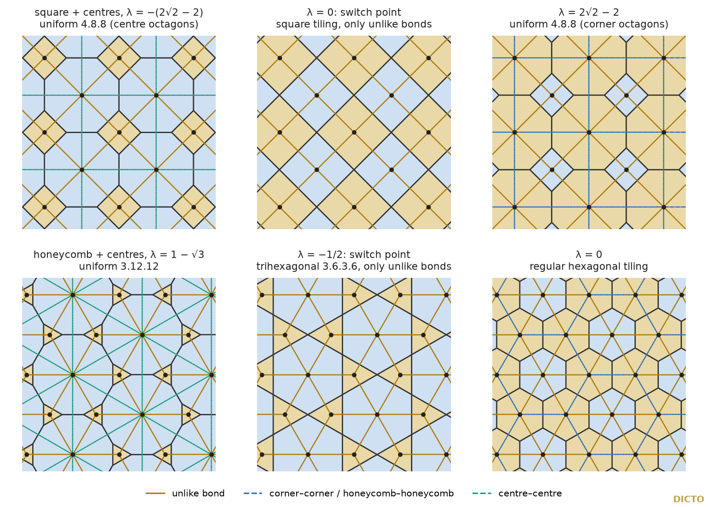
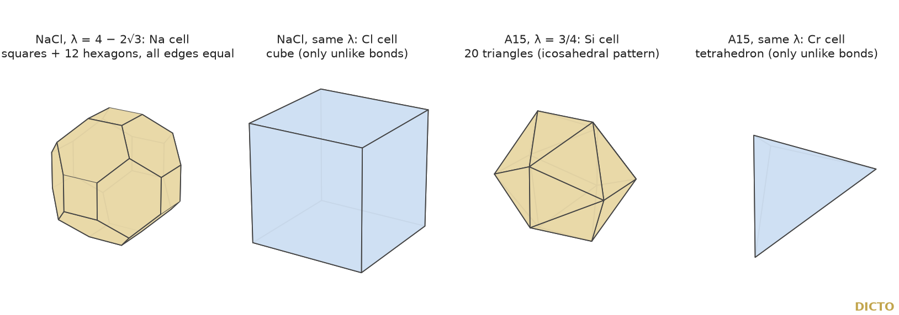
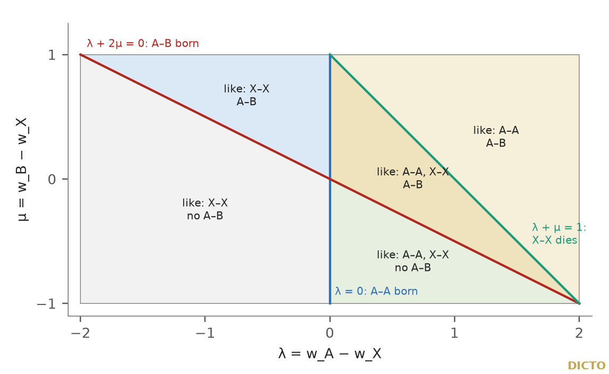

Theorem: for ten classical two-kind crystal site sets, and one three-kind set, the weighted Voronoi (power) diagram is computed exactly along the whole weight line on which both kinds have cells: every flip, the bonds on every interval, and every point where only unlike bonds exist. The two hand-overs of the DICTONIC loops, gradual and with a single switch, both recur.

Two loops of DICTO's showed two ways in which bonds can hand over. DICTO proposed that the same branches appear in other networks. We walked the weight through ten networks to find out.
Paper #48 [1] found the golden pair (the Icosaxes and the Unborn Axes) in a one-parameter family of space-filling truncated octahedra; paper #51 [2] found the Delian bond (Samson and Delilah) in a one-parameter family between Kepler's rhombic dodecahedron and the cube. DICTO calls the solids the DICTONIC SOLIDS and the pairs the DICTONIC BONDS. Paper #52 [3] proved that both loops are power diagrams of fixed sites of two kinds, the caesium chloride sites and the fluorite sites, with one weight slid between the kinds, and that the bonds in the golden loop hand over gradually while those in the Delian loop hand over at the octet. On 25 October 2026 DICTO proposed that these branches could show up elsewhere in geometric networks in slightly different guises. This paper reports the exact study that tests that proposal [S].
Fix the points; give each kind a weight; let the difference of the weights run. Each piece is the region nearer, in the weighted sense, to its own point than to any other.
Power diagram. Given sites ci with weights wi, the power cell of ci is the set of points p with |p − ci|² − wi ≤ |p − cj|² − wj for all j [4, 5]. The cells are convex and fill space; two of them meet, if at all, in the power bisector of their sites. Two sites are bonded when their cells share a face of full dimension (an edge in the plane, a polygon in space); the bonds are the edges of the dual weighted-Delaunay (regular) subdivision [4]. A bond is unlike when it joins sites of different kinds and like otherwise.
The networks. Each network is a periodic set of sites of two kinds A and B, with wA = λ and wB = 0, so λ = wA − wB (Table 1). The coexistence range is the set of λ at which both kinds have cells of positive volume. A flip is an interior value of λ at which the face lattice of the diagram changes. Following #52, the two like bonds hand over gradually when both are alive on a common open interval, and with a single switch when one dies exactly where the other is born. A switch point is a value of λ at which both kinds have cells and every bond is unlike: the octet is the switch point of the Delian loop.
| Network | Kinds A, B | Sites and units |
|---|---|---|
| CsCl (golden-loop sites) | big, small | big 2ℤ³, small 2ℤ³ + (1, 1, 1): half cube edge 1. The golden loop's x ∈ [0, ∞] is λ = (x − 1)/(x + 1) |
| fluorite (Delian-loop sites) | tet, oct | fcc ("oct") and all its tetrahedral holes ("tet"); octet edge 1, the app's units. λ = (3/8)(2t − 1) |
| square + centres | corner, centre | corners 2ℤ², centres 2ℤ² + (1, 1): square edge 2 |
| honeycomb + centres | honeycomb, centre | the triangular lattice of edge 1, split 2 : 1 into the honeycomb points and the hexagon centres |
| kagome + centres | kagome, centre | the triangular lattice of edge 1, split 3 : 1 into the kagome points and the hexagon centres |
| rock salt NaCl | Na, Cl | two face-centred cubic lattices; Na–Cl distance 1 |
| zinc blende ZnS | Zn, S | fcc (Zn) and one set of its tetrahedral holes (S); cubic cell edge 4, Zn–S distance √3, Zn–Zn distance 2√2 |
| hcp holes | tet, oct | the octahedral and tetrahedral holes of ideal hexagonal close packing, the cell centres of the gyrated tetrahedral–octahedral honeycomb (used in DICTO's papers #37a and #40 [26, 27]); hcp edge 1 |
| A15 Cr₃Si | Si, Cr | the A15 (β-tungsten) sites; cubic cell edge 2 |
| C15 Laves MgCu₂ | Mg, Cu | the C15 sites; cubic cell edge 8 |
| perovskite ABX₃ (three kinds) | A, B, X | A cube corners, B body centre, X face centres; cubic cell edge 2 (A–X distance √2, B–X distance 1); λ = wA − wX, μ = wB − wX |
Table 1. The networks and their units [S, README "Units"]. Hexagonal sites are handled exactly in a 60° basis with a rational metric; a power diagram in such a metric is an affine image of the Euclidean one, with the same combinatorics and the same weights.
For every network the whole walk is known exactly: where both kinds live, where the pattern flips, which bonds exist in between, and where only unlike bonds are left.
| Network | Range | Flips | A–A present | B–B present | Hand-over | Switch point |
|---|---|---|---|---|---|---|
| CsCl | (−3, 3) | −1, 1 | big–big (−1, 3] | small–small [−3, 1) | gradual, both on (−1, 1) | none |
| fluorite | (−3/8, 3/8) | −1/8 | tet–tet (−1/8, 3/8] | oct–oct [−3/8, −1/8) | single switch | −1/8 (octet) |
| square + centres | (−2, 2) | 0 | corner–corner (0, 2] | centre–centre [−2, 0) | single switch | 0 (square tiling) |
| honeycomb + centres | (−1, 1) | −1/2 | honeycomb–honeycomb (−1/2, 1] | centre–centre [−1, −1/2) | single switch | −1/2 (trihexagonal) |
| kagome + centres | (−1, 1) | none | kagome–kagome (−1, 1] | centre–centre only at −1 | none: one like bond | none |
| rock salt | (−1, 1) | 0 | Na–Na (0, 1] | Cl–Cl [−1, 0) | single switch | 0 (cubes) |
| zinc blende | (−3, 3) | −1, 1 | Zn–Zn (−1, 3] | S–S [−3, 1) | gradual, both on (−1, 1) | none |
| hcp holes | (−11/24, 3/8) | −1/8, 5/24 | tet–tet (−11/24, 3/8] | oct–oct [−11/24, 5/24) | gradual, both on (−11/24, 5/24) | none |
| A15 | (−5/4, 5/4) | 1/4, 3/4 | Si–Si (1/4, 5/4] | Cr–Cr [−5/4, 3/4) | gradual, both on (1/4, 3/4) | none |
| C15 | (−11, 11) | −5, 7, 9 | Mg–Mg (−5, 11] | Cu–Cu [−11, 9) | gradual, both on (−5, 9) | none |
Table 2. The ten walks [S, README "Summary table" and "Lives of the bonds"; relay-summary.json]. λ in the units of Table 1. The unlike bond is present exactly on the open range in every row. The ends of the like-bond lives are closed where the other kind's cells have shrunk to points but the like faces survive.
Why: along the weight line every corner of every cell moves on a straight line, so each corner stays a corner until one exact rational value; walking from one such value to the next covers the whole line.
Proof (computer-assisted, exact). Each site set has rational coordinates in a rational metric G. The power inequality between sites i and j is nij·p ≤ bij(λ) with nij rational and bij affine in λ with rational coefficients. A corner is the solution of d such equalities, so it is p(λ) = A⁻¹b(λ), affine in λ with rational coefficients, and the slack of every other inequality at that corner is affine in λ. Hence, at a rational sample λ₀, the face lattice is constant on the open interval on which no slack that is positive at λ₀ reaches 0; its ends are rational [S, scripts/engine.py]. Floats only choose candidate corners; every corner is then solved and tested in exact fractions. The walk starts at λ = 0, finds the interval, analyses its end (the stop), steps just past the stop and repeats, checking that each new interval begins exactly at the previous stop [S, scripts/census.py]. On every interval: the cell volumes, as polynomials in λ, add up to the volume of the lattice cell identically (so no corner and no cell is missing); every face is found in both of its cells with the same measure; Euler's formula holds for every three-dimensional cell; and a distance bound shows that the finite list of sites cannot be cut by a farther site anywhere on the closed interval. At every stop the limit of the interval's corners equals the power cell computed from scratch at that exact λ. (i) Increasing λ only relaxes the inequalities of A cells against B sites, so every A cell grows and every B cell shrinks with λ; each kind therefore has cells on an interval, and the walk ends where a cell volume polynomial vanishes and the cell is checked to be a point. (ii) The interval ends are the flips; that the face lattice differs on the two sides of each flip is read off the interval records. (iii) The life of each bond type is read off the records of all intervals and stops, with a check that it is present on every record between its ends [S, scripts/relay.py]. (iv) All records are searched for parameters with both kinds alive and only unlike bonds; the dual cells and bond counts are read off the corner incidences. (v) For the perovskite, every slack is affine in (λ, μ); exact chambers are found and the plane is explored by stepping across every wall, and every interior wall segment is checked to be covered by chambers on its other side [S, scripts/perovskite.py]. An independent float computation at three random parameters inside every interval gives the same bond counts [S, scripts/crosscheck.py]. Both DICTONIC loops of #52 are reproduced exactly, including the Delian flip at t = 1/3 and its two equal-edged stops. In all: 543 checks on the walks, 41 on the bond lives (including 9 regressions against #52's study), 47 on the perovskite, 12 float and dual-cell cross-checks; 643 PASS, 0 FAIL (Appendix B). ∎
The theorem places DICTO's two loops inside larger families, shows that every switch point is a meeting of two ways to cut the same dual cell, and finds classical tilings at the named stops.
Corollary 1 (the DICTONIC loops inside the census). In half-cube-edge units the golden loop of #48 is λ = (x − 1)/(x + 1), so x ∈ [0, ∞] covers exactly [−1, 1]: the gradual-hand-over interval of CsCl, from flip to flip. Its ends x = 0 and x = ∞ are those flips, where the cells are octahedra and cuboctahedra; beyond them, on (−3, −1) and (1, 3), the CsCl family continues with truncated cubes and octahedra, ending in cubes at ±3 [S, README]. The Delian loop of #51, λ = (3/8)(2t − 1), covers the whole fluorite range, and its switch is the octet.
Corollary 2 (switch points are walls). At each of the four switch points the dual cells are not simplices (Main theorem (iv)), and on the two sides they are cut in the two possible ways: the dual squares and rhombi into two triangles across one diagonal or the other (2 centre + 1 corner or 1 centre + 2 corner sites; the same for the honeycomb); the dual cubes of rock salt into four corner tetrahedra and one central tetrahedron (3 Cl + 1 Na and 4 Cl below 0, 1 Cl + 3 Na and 4 Na above); the rhombic dodecahedra of fluorite as in #52 [S, data/raw/*.json "dual"]. In the language of regular subdivisions [6, 7] each switch point is a wall where two triangulations of the same non-simplicial cell meet, and the switch is a flip in that sense. For square + centres and rock salt the wall is forced at λ = 0: with equal weights the sites form a lattice (a square lattice, the simple cubic lattice) whose Delaunay cells are squares and cubes; Voronoi's theory of lattice Delaunay subdivisions covers this case [8, 9]. The swap of the two diagonals in a quadrilateral is the elementary two-dimensional flip; the two cuts of the cube used here are its two "corner-cut" triangulations into five tetrahedra [7].

Proposition (classical: the circumsphere rule). If every tile of a face-to-face convex tiling has a circumscribed circle or sphere, then two tiles that share a facet have their facet in the radical line or plane of their two circles or spheres (its corners have power 0 with respect to both), and the tiling is the power diagram of the tiles' circumcentres with weights equal to the squared circumradii [4, 10, 11, 12]. Every uniform tiling and honeycomb has such tiles.
Corollary 3 (named tilings at the stops). Where a uniform tiling is a stop or a special point of a walk, its λ is the difference of the squared circumradii of the A tile and the B tile, and the census finds exactly that value [S, prior-art.md, find 2]: the uniform truncated square tiling 4.8.8 at λ = ±(2√2 − 2) in square + centres (all edges equal; the octagons are the centre cells for λ < 0 and the corner cells for λ > 0); the uniform truncated hexagonal tiling 3.12.12 at λ = 1 − √3 and the trihexagonal tiling 3.6.3.6 at the switch point λ = −1/2 (one edge length, edge² = 3/4) in honeycomb + centres; the uniform truncated cubic honeycomb (truncated cubes and octahedra) at λ = ±(2√2 − 1) in CsCl; the octet at λ = −1/8 in fluorite and the gyrated tetrahedral–octahedral honeycomb at λ = −1/8 in the hcp holes. These are instances of the Proposition, not new tilings. Away from uniform tilings the census also finds exact stops the rule does not cover: in rock salt every edge of the tiling has one length at λ = ±(4 − 2√3), where the larger cell has 6 squares and 12 hexagons (the face vector of the chamfered cube) and the smaller is a cube (Figure 4).
Corollary 4 (the octet in hexagonal stacking). In the hcp holes, whose diagram at λ = −1/8 is the gyrated tetrahedral–octahedral honeycomb (regular octahedra and tetrahedra; the gyrated octet of DICTO's #37a and one of the stackings of #40 [26, 27]), the octet's flip stays at λ = −1/8: there oct–oct bonds at squared distance 1 die and tet–tet bonds at squared distances 1/2 and 1 are born, as in fluorite. But −1/8 is not a switch point: across the gyrated layers each oct piece keeps 2 oct–oct bonds and each tet piece 1 tet–tet bond. Of these cross-layer bonds, tet–tet at squared distance 1/6 lives on the whole range (−11/24, 3/8] and oct–oct at squared distance 2/3 dies only at a second flip, λ = 5/24 (Table 3). The dual cell at an atom at λ = −1/8 is the trapezo-rhombic dodecahedron (6 rhombi and 6 trapezoids), where fluorite has the rhombic dodecahedron (12 rhombi) [S, crosscheck-checks.txt].
| Network | Bond family (type @ squared site distance) | Present |
|---|---|---|
| hcp holes | oct–tet @ 3/8 | (−11/24, 3/8) |
| oct–oct @ 1 (in-layer) | [−11/24, −1/8) | |
| tet–tet @ 1/2 and @ 1 (in-layer) | (−1/8, 3/8] | |
| oct–oct @ 2/3 (cross-layer) | [−11/24, 5/24) | |
| tet–tet @ 1/6 (cross-layer) | (−11/24, 3/8] | |
| A15 | Cr–Si @ 5/4 | (−5/4, 5/4) |
| Cr–Cr @ 1 and @ 3/2 | [−5/4, 3/4) | |
| Si–Si @ 3 | (1/4, 5/4] | |
| Si–Si @ 4 | (3/4, 5/4] | |
| C15 | Mg–Cu @ 11 | (−11, 11) |
| Cu–Cu @ 8 | [−11, 9) | |
| Mg–Mg @ 12 | (−5, 11] | |
| Mg–Mg @ 32 | (7, 11] |
Table 3. Bond families where a bond type splits by distance [S, README "Lives of the bonds"; relay-summary.json "orbits"]. In the other networks each bond type is a single family.
Corollary 5 (A15 beyond Weaire and Phelan). Weaire and Phelan already used this family: as reported by Sloane and Vaishampayan [13], their weighted Voronoi partition of A15 puts the walls between unlike sites on the plane (X − E)·(D − E) = μ|D − E|² and has the 12-faced and 14-faced cells for 0 < μ < 3/5 [14]; Kashyap and Neuhoff [15] gave its cell volumes. That plane is a power bisector, and in our units λ = (5/4)(2μ − 1), so μ = 0, 1/2, 3/5 are λ = −5/4 (the lower end), 0 (the Weaire–Phelan cells) and 1/4 (the first flip); rescaled, Kashyap and Neuhoff's volume is the Si cell volume (4λ + 5)³/128 on (−5/4, 1/4) [S, prior-art.md, find 1]. What the census adds is the rest of the walk: on (1/4, 3/4) Si–Si bonds exist alongside Cr–Cr; at λ = 3/4 the Cr–Cr bonds (both families) die exactly where a second Si–Si family is born, the Cr cells are tetrahedra with only unlike bonds and the Si cells have 20 triangles, with 12 corners of degree 5 (the face pattern of the icosahedron); at 5/4 the Si cells are truncated octahedra, the Voronoi cells of the body-centred cubic Si sites. Because the first Si–Si family has been alive since 1/4, λ = 3/4 is not a switch point.

Corollary 6 (perovskite). In the three-kind perovskite the two like bonds A–A and X–X are both present exactly on 0 < λ < 1 − μ, and their two lines meet only at the corner (0, 1) of the region, where the X cells vanish (Figure 3). So the hand-over is gradual throughout, and would only become a single switch at the edge of the region. At (0, −1) the B cells are points and the A and X cells are rhombic dodecahedra, the Voronoi cells of the face-centred cubic A + X sites.

Some patterns hold in every network we computed, but we have not proved them in general. We state them as observations.
DICTO's proposal holds: both branches of the DICTONIC loops, the gradual hand-over and the single switch, recur in classical networks, in slightly different guises.
The single switch of the Delian loop reappears in the square lattice with its centres, in the honeycomb with its hexagon centres (where the switch is the trihexagonal tiling) and in rock salt (where it is the cubic honeycomb of equal weights); the gradual hand-over of the golden loop reappears in zinc blende, A15, C15 and the holes of hexagonal close packing. The golden loop is exactly the gradual stretch of the caesium chloride family, and the Delian loop is the whole fluorite family. One guise is new to the DICTONIC picture: in hexagonal stacking the octet's flip survives at the same weight but stops being a switch point, because the gyrated layers keep like bonds across them, and a second flip follows at λ = 5/24. Open: Observations 1–5, the full exact walk of other three-kind networks, and whether the switch-point networks share a common reason.
Power diagrams, their flips, the named tilings and the A15 family up to its first flip are known. We did not find the full walks of these networks.
Known. Power (Laguerre) diagrams and their duality with regular subdivisions [4, 5]; regular subdivisions change only at the walls of the secondary fan, where non-simplicial cells are cut in two ways [6, 7], including for periodic sets [17] and lattices (Voronoi's L-types [8, 9]); the circumsphere rule and the criteria for a tiling to be a power diagram [10, 11, 12]; the uniform tilings and honeycombs at the stops [18, 19, 20]; the classical Voronoi cells at equal weights and at the ends (squares, hexagons, triangles, rhombille rhombi; cubes, rhombic dodecahedra, truncated octahedra, the triakis truncated tetrahedra of diamond, hexagonal prisms) [16, 18]; the Weaire–Phelan cells as the A15 Voronoi cells and the A15 weighted family for 0 < μ < 3/5, our λ ≤ 1/4, with its cell volumes [13, 14, 15]; the C15 cells [21, 22]; radical tessellations of binary crystals, including one point of the rock salt interval (0, 1): a crystal of large spheres on the face-centred cubic lattice with small spheres in the octahedral pores, whose large-sphere radical polyhedra have 6 quadrangles and 12 hexagons and whose small-sphere polyhedra are cubes [23]; Dirichlet-domain types of cubic lattice complexes changing at critical positional parameters (unweighted; the closest crystallographic analogue) [24]; the two DICTONIC loops as power diagrams [3]; the gyrated octet in DICTO's earlier work [26, 27].
Not found, in the sources listed in Appendix A: the full weight walks of square + centres, honeycomb + centres, kagome + centres, rock salt, zinc blende, the hcp holes, A15 beyond λ = 1/4, C15 and the perovskite, with their exact flips, bond lives and switch points; the split of these networks into gradual and single-switch hand-overs; the switch point of honeycomb + centres at the trihexagonal tiling; the second flip of the hcp holes at 5/24; the CsCl–zinc blende coincidence; the rock salt stop λ = 4 − 2√3. Several are elementary and may well be known in the radical-tessellation or crystallographic literature; Koch 1973 [24] and the radical-tessellation papers were not read in full. "Not found" is limited to those sources.
[1] DICTO, "The Golden Split: Icosahedra, Unborns and AXE Become Two Convex Space-Fillers", paper #48, DICTO DOI: 10.5281/zenodo.23596362 (2026).
[2] DICTO, "The Delian Bond: Samson, Delilah and the Octet Between Kepler's Rhombic Dodecahedron and the Cube", paper #51, DICTO DOI: 10.5281/zenodo.23606828 (2026).
[3] DICTO, "The Web of Bonds: How the DICTONIC Bonds Hand Over", paper #52, DICTO DOI: 10.5281/zenodo.23629252 (2026).
[26] DICTO, "The DICTO Ogdoecontahedron on the Gyrated Octet", paper #37a, DICTO DOI: 10.5281/zenodo.23484012 (2026).
[27] DICTO, "The DICTO OG Family on Every Stacking", paper #40, DICTO DOI: 10.5281/zenodo.23490114 (2026).
[4] F. Aurenhammer, "Power diagrams: properties, algorithms and applications", SIAM Journal on Computing 16 (1987) 78–96, doi:10.1137/0216006.
[5] H. Imai, M. Iri, K. Murota, "Voronoi diagram in the Laguerre geometry and its applications", SIAM Journal on Computing 14 (1985) 93–105, doi:10.1137/0214006.
[6] I. M. Gelfand, M. M. Kapranov, A. V. Zelevinsky, Discriminants, Resultants, and Multidimensional Determinants, Birkhäuser, Boston (1994), doi:10.1007/978-0-8176-4771-1.
[7] J. A. De Loera, J. Rambau, F. Santos, Triangulations: Structures for Algorithms and Applications, Springer (2010), doi:10.1007/978-3-642-12971-1.
[8] R. M. Erdahl, "Zonotopes, dicings, and Voronoi's conjecture on parallelohedra", European Journal of Combinatorics 20 (1999) 527–549, doi:10.1006/eujc.1999.0294.
[9] M. Dutour Sikirić, A. Schürmann, F. Vallentin, "A generalization of Voronoi's reduction theory and its application", Duke Mathematical Journal 142 (2008) 127–164, doi:10.1215/00127094-2008-003.
[10] F. Aurenhammer, "A criterion for the affine equivalence of cell complexes in Rd and convex polyhedra in Rd+1", Discrete & Computational Geometry 2 (1987) 49–64, doi:10.1007/BF02187870.
[11] P. F. Ash, E. D. Bolker, "Recognizing Dirichlet tessellations", Geometriae Dedicata 19 (1985), doi:10.1007/BF00181470.
[12] P. F. Ash, E. D. Bolker, "Generalized Dirichlet tessellations", Geometriae Dedicata 20 (1986) 209–243, doi:10.1007/BF00164401.
[13] N. J. A. Sloane, V. A. Vaishampayan, "A Zador-like formula for quantizers based on periodic tilings", IEEE Transactions on Information Theory 48 (2002) 3138–3140, doi:10.1109/TIT.2002.805086; arXiv:math/0207146.
[14] D. Weaire, R. Phelan, "A counter-example to Kelvin's conjecture on minimal surfaces", Philosophical Magazine Letters 69 (1994) 107–110, doi:10.1080/09500839408241577.
[15] N. Kashyap, D. L. Neuhoff, "On quantization with the Weaire–Phelan partition", IEEE Transactions on Information Theory 47 (2001) 2538–2543, doi:10.1109/18.945264.
[16] J. H. Conway, N. J. A. Sloane, Sphere Packings, Lattices and Groups, 3rd ed., Springer (1999), doi:10.1007/978-1-4757-6568-7.
[17] V. Alexeev, "Complete moduli in the presence of semiabelian group action", Annals of Mathematics 155 (2002) 611–708, doi:10.2307/3062130; arXiv:math/9905103 (§5.12).
[18] B. Grünbaum, G. C. Shephard, Tilings and Patterns, W. H. Freeman, New York (1987).
[19] A. Andreini, "Sulle reti di poliedri regolari e semiregolari e sulle corrispondenti reti correlative", Memorie della Società Italiana delle Scienze, Serie 3, 14 (1905).
[20] J. H. Conway, H. Burgiel, C. Goodman-Strauss, The Symmetries of Things, A K Peters (2008).
[21] F. C. Frank, J. S. Kasper, "Complex alloy structures regarded as sphere packings. I. Definitions and basic principles", Acta Crystallographica 11 (1958) 184–190, doi:10.1107/S0365110X58000487.
[22] F. C. Frank, J. S. Kasper, "Complex alloy structures regarded as sphere packings. II. Analysis and classification of representative structures", Acta Crystallographica 12 (1959) 483–499, doi:10.1107/S0365110X59001499.
[23] D. Wang, X. An, D. Gou, H. Zhao, L. Wang, F. Huang, "DEM construction of binary hard sphere crystals and radical tessellation", AIP Advances 8 (2018) 105203, doi:10.1063/1.5052478.
[24] E. Koch, "Wirkungsbereichspolyeder und Wirkungsbereichsteilungen zu kubischen Gitterkomplexen mit weniger als drei Freiheitsgraden", Zeitschrift für Kristallographie 138 (1973) 196–215, doi:10.1524/zkri.1973.138.1-4.196.
[25] A. Reddy, M. B. Buckley, A. Arora, F. S. Bates, K. D. Dorfman, G. M. Grason, "Stable Frank–Kasper phases of self-assembled, soft matter spheres", PNAS 115 (2018) 10233–10238, doi:10.1073/pnas.1809655115.
[S] DICTO, relay-census study (studies/2026-10-25-relay-census, commit e4dafa9): README.md, prior-art.md; scripts/engine.py, networks.py, census.py → data/raw/<network>.json and data/checks/<network>-checks.txt; relay.py → data/raw/relay-summary.json, relay-checks.txt; perovskite.py → perovskite.json, perovskite-checks.txt; crosscheck.py → crosscheck-checks.txt; tables.py → data/raw/tables.md (Appendix C).
The prior-art search of 25 October 2026 (file prior-art.md in the study folder [S]), on top of #52's [3]. DICTO's reference library (kaleidohedra-references): library searches on power diagrams, Laguerre and radical tessellations of rock salt and zinc blende, weighted Voronoi diagrams of Archimedean tilings, and Voronoi cells of lattice complexes (Koch, Fischer); its index searched for Laguerre, power diagram, Aurenhammer, weighted Voronoi, Frank–Kasper, Weaire, Laves, A15, zinc blende, trapezo, radical, chamfered, trihexagonal, Tilings and Patterns, Andreini, Koch, Fischer, Sloane, O'Keeffe, Hyde, Blatov, Dolbilin, Engel, Dirichlet, lattice complex, Archimedean, Grünbaum. Koch 1973 [24], Blatov 2004, O'Keeffe 1979, Frank and Kasper 1958 [21] and Conway, Burgiel and Goodman-Strauss [20] are in the library as links only. Web: about 12 queries (radical, Laguerre and power tessellations with rock salt, zinc blende, perovskite and binary hard-sphere crystals; Archimedean tilings as power diagrams; Fischer, Koch and Hellner; Frank–Kasper and Laves Voronoi cells; Weaire–Phelan weighted Voronoi; Kusner–Sullivan; O'Keeffe and Hyde; weighted Delaunay flips in crystals; the trihexagonal tiling as a power diagram). Read in full: Sloane and Vaishampayan [13] (arXiv). Read in part: Wang et al. [23] (publisher page and its table). Every DOI was checked on Crossref (title, venue, volume, pages, year). Not read: the full texts of Koch 1973 [24], Weaire and Phelan [14], Kashyap and Neuhoff [15] (their formula is quoted from [13]), Ash and Bolker [11, 12], Blatov 2004, Engel's Geometric Crystallography, O'Keeffe and Hyde's Crystal Structures; Google Scholar itself. Reddy et al. [25] describe A15 as two 12-faced and six 14-faced Voronoi cells and use weighted partitions of Frank–Kasper phases; no C15 weight walk was found there.
| Part | What is checked | PASS | FAIL |
|---|---|---|---|
| walks (census.py) | per interval: volume sum identity, face to face, Euler, distance bound; per stop: limit = cell from scratch; classical cells. square 13, honeycomb 18, kagome 11, CsCl 25, fluorite 58, rock salt 42, zinc blende 61, hcp holes 48, A15 60, C15 207 | 543 | 0 |
| bond lives (relay.py) | each bond type on one interval; single edge length at the planar switch points; 9 regressions against #52's study | 41 | 0 |
| perovskite (perovskite.py) | chambers: distance bound, Euler, volume sum, face to face; bounded region; every wall covered; rhombic dodecahedra at (0, −1) | 47 | 0 |
| cross-check (crosscheck.py) | float cells at 3 random parameters per interval (10 networks); exact dual cells at the two octet-type stops | 12 | 0 |
| total | 643 | 0 | |
Exact arithmetic: Python fractions and sympy (polynomials in λ, or in λ and μ); a number is zero only if it is exactly zero; floats only choose candidate corners and serve as the independent cross-check. Run on one machine, one job at a time, about 3.5 minutes in all [S, README "Run times"].
Generated from the study's data/raw/tables.md [S] when this paper is built (not retyped). For every interval (in brackets) and every stop: the bond types present, and for each kind its cell (face vector: 8×3+6×4 means 8 triangles and 6 squares; in the plane, n-gon) and its bonds by neighbour kind; "point" means the cell has shrunk to a point.
| square lattice + centres · λ = wcorner − wcentre | |||||
|---|---|---|---|---|---|
| λ | bond types | centre cell (faces) | centre bonds | corner cell (faces) | corner bonds |
| −2 | centre–centre | 4–gon | 4 centre | point | |
| (−2, 0) | centre–centre, centre–corner | 8–gon | 4 centre, 4 corner | 4–gon | 4 centre |
| 0 | centre–corner | 4–gon | 4 corner | 4–gon | 4 centre |
| (0, 2) | centre–corner, corner–corner | 4–gon | 4 corner | 8–gon | 4 centre, 4 corner |
| 2 | corner–corner | point | 4–gon | 4 corner | |
| honeycomb + hexagon centres · λ = whoneycomb − wcentre | |||||
|---|---|---|---|---|---|
| λ | bond types | centre cell (faces) | centre bonds | honeycomb cell (faces) | honeycomb bonds |
| −1 | centre–centre | 6–gon | 6 centre | point | |
| (−1, −1/2) | centre–centre, centre–honeycomb | 12–gon | 6 centre, 6 honeycomb | 3–gon | 3 centre |
| −1/2 | centre–honeycomb | 6–gon | 6 honeycomb | 3–gon | 3 centre |
| (−1/2, 1) | centre–honeycomb, honeycomb–honeycomb | 6–gon | 6 honeycomb | 6–gon | 3 centre, 3 honeycomb |
| 1 | honeycomb–honeycomb | point | 3–gon | 3 honeycomb | |
| kagome + hexagon centres · λ = wkagome − wcentre | |||||
|---|---|---|---|---|---|
| λ | bond types | centre cell (faces) | centre bonds | kagome cell (faces) | kagome bonds |
| −1 | centre–centre | 6–gon | 6 centre | point | |
| (−1, 1) | centre–kagome, kagome–kagome | 6–gon | 6 kagome | 6–gon | 2 centre, 4 kagome |
| 1 | kagome–kagome | point | 4–gon | 4 kagome | |
| CsCl (bcc two-kind; golden-loop sites) · λ = wbig − wsmall | |||||
|---|---|---|---|---|---|
| λ | bond types | big cell (faces) | big bonds | small cell (faces) | small bonds |
| −3 | small–small | point | 6×4 | 6 small | |
| (−3, −1) | big–small, small–small | 8×3 | 8 small | 8×3+6×8 | 8 big, 6 small |
| −1 | big–small, small–small | 8×3 | 8 small | 8×3+6×4 | 8 big, 6 small |
| (−1, 1) | big–big, big–small, small–small | 6×4+8×6 | 6 big, 8 small | 6×4+8×6 | 8 big, 6 small |
| 1 | big–big, big–small | 8×3+6×4 | 6 big, 8 small | 8×3 | 8 big |
| (1, 3) | big–big, big–small | 8×3+6×8 | 6 big, 8 small | 8×3 | 8 big |
| 3 | big–big | 6×4 | 6 big | point | |
| fluorite (fcc + all tetrahedral holes; Delian-loop sites) · λ = wtet − woct | |||||
|---|---|---|---|---|---|
| λ | bond types | oct cell (faces) | oct bonds | tet cell (faces) | tet bonds |
| −3/8 | oct–oct | 12×4 | 12 oct | point | |
| (−3/8, −1/8) | oct–oct, oct–tet | 8×3+12×6 | 12 oct, 8 tet | 4×3 | 4 oct |
| −1/8 | oct–tet | 8×3 | 8 tet | 4×3 | 4 oct |
| (−1/8, 3/8) | oct–tet, tet–tet | 8×3 | 8 tet | 4×3+6×6 | 4 oct, 6 tet |
| 3/8 | tet–tet | point | 6×4 | 6 tet | |
| rock salt NaCl · λ = wNa − wCl | |||||
|---|---|---|---|---|---|
| λ | bond types | Cl cell (faces) | Cl bonds | Na cell (faces) | Na bonds |
| −1 | Cl–Cl | 12×4 | 12 Cl | point | |
| (−1, 0) | Cl–Cl, Cl–Na | 6×4+12×6 | 12 Cl, 6 Na | 6×4 | 6 Cl |
| 0 | Cl–Na | 6×4 | 6 Na | 6×4 | 6 Cl |
| (0, 1) | Cl–Na, Na–Na | 6×4 | 6 Na | 6×4+12×6 | 6 Cl, 12 Na |
| 1 | Na–Na | point | 12×4 | 12 Na | |
| zinc blende ZnS · λ = wZn − wS | |||||
|---|---|---|---|---|---|
| λ | bond types | S cell (faces) | S bonds | Zn cell (faces) | Zn bonds |
| −3 | S–S | 12×4 | 12 S | point | |
| (−3, −1) | S–S, S–Zn | 4×3+12×5 | 12 S, 4 Zn | 4×3 | 4 S |
| −1 | S–S, S–Zn | 16×3 | 12 S, 4 Zn | 4×3 | 4 S |
| (−1, 1) | S–S, S–Zn, Zn–Zn | 12×3+4×6 | 12 S, 4 Zn | 12×3+4×6 | 4 S, 12 Zn |
| 1 | S–Zn, Zn–Zn | 4×3 | 4 Zn | 16×3 | 4 S, 12 Zn |
| (1, 3) | S–Zn, Zn–Zn | 4×3 | 4 Zn | 4×3+12×5 | 4 S, 12 Zn |
| 3 | Zn–Zn | point | 12×4 | 12 Zn | |
| hcp holes (octahedral + tetrahedral holes of ideal hcp) · λ = wtet − woct | |||||
|---|---|---|---|---|---|
| λ | bond types | oct cell (faces) | oct bonds | tet cell (faces) | tet bonds |
| −11/24 | oct–oct | 6×4+2×6 | 8 oct | point | |
| (−11/24, −1/8) | oct–oct, oct–tet, tet–tet | 6×3+6×6+2×9 | 8 oct, 6 tet | 4×3 | 3 oct, 1 tet |
| −1/8 | oct–oct, oct–tet, tet–tet | 8×3 | 2 oct, 6 tet | 4×3 | 3 oct, 1 tet |
| (−1/8, 5/24) | oct–oct, oct–tet, tet–tet | 2×3+6×5 | 2 oct, 6 tet | 6×3+3×5+3×6+1×9 | 3 oct, 10 tet |
| 5/24 | oct–tet, tet–tet | 6×4 | 6 tet | 6×3+3×4+4×6 | 3 oct, 10 tet |
| (5/24, 3/8) | oct–tet, tet–tet | 6×4 | 6 tet | 9×4+4×6 | 3 oct, 10 tet |
| 3/8 | tet–tet | point | 6×3+3×4+1×6 | 10 tet | |
| A15 Cr₃Si · λ = wSi − wCr | |||||
|---|---|---|---|---|---|
| λ | bond types | Cr cell (faces) | Cr bonds | Si cell (faces) | Si bonds |
| −5/4 | Cr–Cr | 8×3+2×4 | 10 Cr | point | |
| (−5/4, 1/4) | Cr–Cr, Cr–Si | 12×5+2×6 | 10 Cr, 4 Si | 12×5 | 12 Cr |
| 1/4 | Cr–Cr, Cr–Si | 8×4+4×5+2×6 | 10 Cr, 4 Si | 12×5 | 12 Cr |
| (1/4, 3/4) | Cr–Cr, Cr–Si, Si–Si | 8×4+2×6+4×7 | 10 Cr, 4 Si | 8×3+12×7 | 12 Cr, 8 Si |
| 3/4 | Cr–Si, Si–Si | 4×3 | 4 Si | 20×3 | 12 Cr, 8 Si |
| (3/4, 5/4) | Cr–Si, Si–Si | 4×3 | 4 Si | 12×3+6×6+8×9 | 12 Cr, 14 Si |
| 5/4 | Si–Si | point | 6×4+8×6 | 14 Si | |
| C15 Laves MgCu₂ · λ = wMg − wCu | |||||
|---|---|---|---|---|---|
| λ | bond types | Cu cell (faces) | Cu bonds | Mg cell (faces) | Mg bonds |
| −11 | Cu–Cu | 6×4 | 6 Cu | point | |
| (−11, −5) | Cu–Cu, Cu–Mg | 6×3+6×7 | 6 Cu, 6 Mg | 12×3 | 12 Cu |
| −5 | Cu–Cu, Cu–Mg | 6×3+6×5 | 6 Cu, 6 Mg | 12×3 | 12 Cu |
| (−5, 7) | Cu–Cu, Cu–Mg, Mg–Mg | 12×5 | 6 Cu, 6 Mg | 12×5+4×6 | 12 Cu, 4 Mg |
| 7 | Cu–Cu, Cu–Mg, Mg–Mg | 12×4 | 6 Cu, 6 Mg | 12×4+4×6 | 12 Cu, 4 Mg |
| (7, 9) | Cu–Cu, Cu–Mg, Mg–Mg | 6×4+6×6 | 6 Cu, 6 Mg | 12×3+12×6+4×12 | 12 Cu, 16 Mg |
| 9 | Cu–Mg, Mg–Mg | 6×4 | 6 Mg | 12×3+12×4+4×12 | 12 Cu, 16 Mg |
| (9, 11) | Cu–Mg, Mg–Mg | 6×4 | 6 Mg | 12×4+12×5+4×12 | 12 Cu, 16 Mg |
| 11 | Mg–Mg | point | 12×3+4×6 | 16 Mg | |